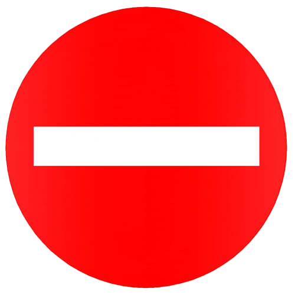
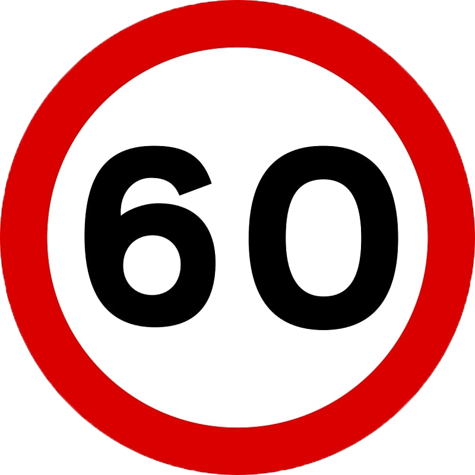
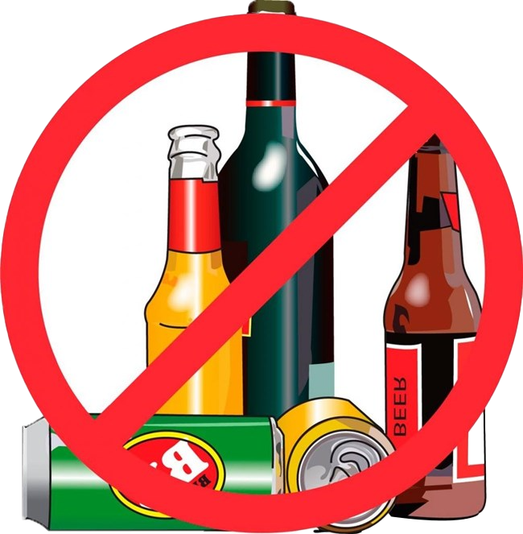
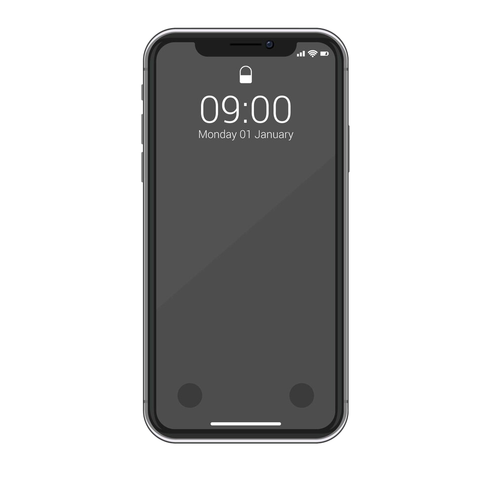

Theo Bộ luật dân sự năm 2015, điều 584, Người nào có hành vi xâm phạm tính mạng, sức khỏe, danh dự, nhân phẩm, uy tín, tài sản, quyền, lợi ích hợp pháp khác của người khác mà gây thiệt hại thì phải bồi thường, trừ trường hợp Bộ luật này, luật khác có liên quan quy định khác. Vậy nên khi bạn điều khiển phương tiện giao thông va chạm với phương tiện khác, tuỳ theo trường hợp, độ nghiêm trọng của vấn đề, bạn có thể phải bồi thường

Theo Nghị định 100/2019/NĐ-CP được sửa đổi bởi Nghị định 123/2021/NĐ-CP, quy định:
- Người điều khiển xe ô tô thực hiện hành vi đi ngược chiều bị phạt tiền từ 4 - 6 triệu đồng (Khoản 5 Điều 5). Ngoài ra, người vi phạm còn bị tước quyền sử dụng Giấy phép lái xe từ 1 - 3 tháng.

Theo Nghị định 100/2019/NĐ-CP quy định về xử phạt vi phạm hành chính trong lĩnh vực giao thông đường bộ và đường sắt, theo nghị định này, nếu bạn chạy vượt quá tốc độ cho phép, số tiền phạt có thể từ 6.000.000 đến 12.000.000 đồng

Khi điều khiển phương tiện giao thông nhưng có uống rượu, bia sẽ bị phạt tiền từ 6.000.000 đồng đến 8.000.000 đồng. Theo đó, mức phạt cao nhất đối với người điều khiển xe máy mà trong máu hoặc hơi thở có nồng độ cồn có thể lên đến 8.000.000 đồng trong trường hợp người này có nồng độ cồn vượt quá 80 miligam/100 mililít máu hoặc vượt quá 0,4 miligam/1 lít khí thở

Khi điều khiển phương tiện giao thông, bạn sẽ không được phép sử dụng điện thoại
Việc sử dụng điện thoại khi điều khiển phương tiện giao thông sẽ gây ra những tai nạn giao thông nguy hiểm